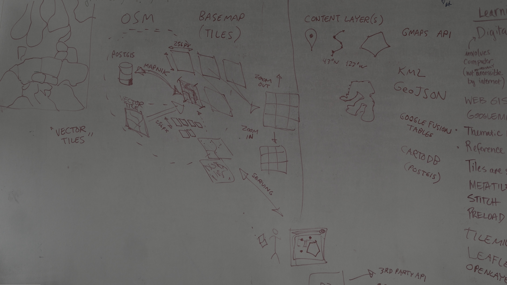

QField
QField features frenzy
 Developers, Consultants and Teachers
Developers, Consultants and Teachers
C++, Python, QGIS, QField, PostGIS, Android, Ili2DB, Webmapping, ...
MARIO BARANZINI - QGIS Plugins, PostGIS, ili2db
MATTHIAS KUHN - QGIS core committer, QField, QGIS Plugins, PostGIS
We
L[i|o]ve open source.
Reuse and edit this presentation on
githubWhy QField?

Because
data is
outside the office
What is QField?
A mobile based data collection app for QGIS
Minimalistic user interface for touch devices
hides the full power of QGIS under the hood.
What can I do with QField?
Comfortably prepare the work on your QGIS desktop once.
Efficiently work on your GIS data outdoor.
What is in QField?
 Simple to use
Opens QGIS projects
QGIS Data Providers
QGIS Rendering
Simple to use
Opens QGIS projects
QGIS Data Providers
QGIS Rendering
 QGIS Forms
Drag and drop designer
Conditional visibility
Attribute constrains
Default values
Take photo
QGIS Forms
Drag and drop designer
Conditional visibility
Attribute constrains
Default values
Take photo
 Digitize Points, Lines and Polygons
Z coordinates
Snapping
Internal or external GPS
Legend
Digitize Points, Lines and Polygons
Z coordinates
Snapping
Internal or external GPS
Legend
And action!
Digitizing depending on legend selection
Digitizing polygons over WMS
Snapping and automatic numbering
Map themes support
Remember attributes (old GUI)
Photo functionality
Advanced form functionalities
What is in the wishlist?

- Hybrid editing / Network state based autosynchronization
- GPS Status information into attributes
- Connect external sensors
- iOS support
- Edit Geometries
- ... Your awesome idea ...

Help us
fund the work